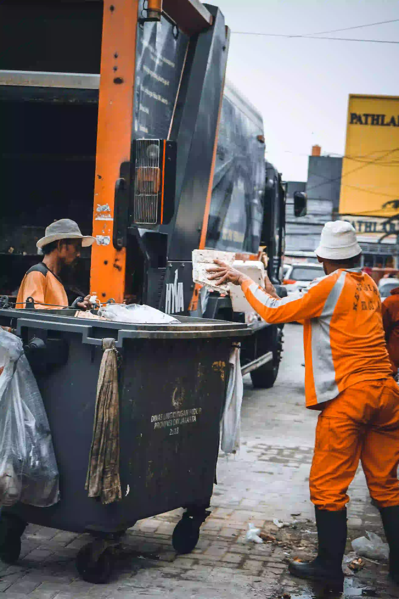

01
Jejak Sampah
Sampah tidak hilang setelah kita membuangnya.
Ia berpindah dari rumah menuju proses pengumpulan, pemilahan, pengolahan, atau tempat pemrosesan akhir. SADARIN membantu melihat perjalanan itu dengan lebih jelas.
Pahami Perjalanannya